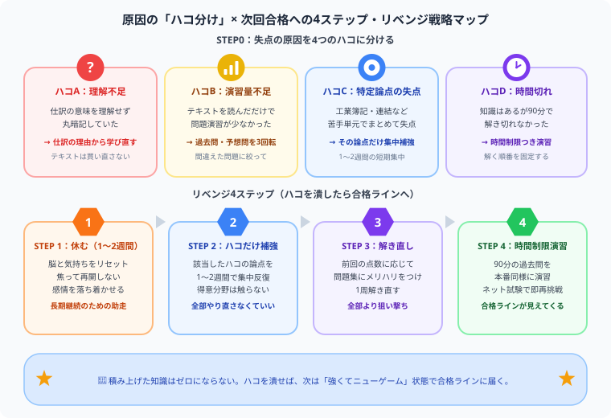

簿記2級に落ちた…次どうする？不合格後の立て直し方【2026年版】
結果発表画面に「不合格」の文字を見た瞬間の、あの感覚——「うわっ、なんじゃこりゃ……」。頭が真っ白になって、これまで積み上げてきた時間が全部否定されたような気がしますよね。その悔しさ、痛いほど分かります。僕自身、公認会計士試験の勉強で何度も同じように心が折れかけました。
でも、これだけは断言します。不合格は「実力ゼロ」の証明ではなく、「どこで何点を落としたか」がまだ整理できていないだけです。感情の波が少し落ち着いたら、この記事で一緒に原因を「ハコ分け」して、1つずつ潰していきましょう。
同じ悔しさを味わった先輩として、本気で書きました。少しでも励みになったら、記事の最後にある【いいねボタン】を押してもらえると、めちゃくちゃ嬉しいです！
合格率20〜30%の試験に挑み、試験当日まで勉強を続けたこと自体が、すでに立派な挑戦です。不合格という結果は一時のものですが、あなたが積み上げた知識は絶対にゼロにはなっていません。そして実務の現場では、「1回で受かったけど内容があいまいな人」より「悔しくて何度も復習して本当に理解した人」の方が、圧倒的に頼りにされます。この経験は、将来「本当に使える会計知識」として必ず返ってきます。
まず「なぜ落ちたか」を冷静に分析する
気持ちが落ち着いたら、感情より先に「ハコ分け」から始めましょう。僕がこれまで受験生を見てきた中でも、不合格の原因は大きく4つのハコに分かれます。自分がどのハコに当てはまるかさえ分かれば、直す場所はかなり絞り込めます。

原因のハコを特定してから対策を立てれば、同じ失敗を繰り返さずに最短距離で合格に近づけます。テキストを買い直す前に、まず下の表で自分のハコを見つけてください。
| 不合格パターン | 特徴 | 対策の方向性 |
|---|---|---|
| 勉強時間が足りなかった | 過去問を解ききれなかった、問題集が終わっていない | 学習計画を立て直し、絶対時間を増やす |
| 工業簿記が弱かった | 商業簿記はできたが工業でつまずいた | 工業簿記テキストを1冊集中的にやり直す |
| 連結会計など特定論点が取れなかった | 苦手単元でまとめて失点した | その論点だけの問題集・動画で集中補強 |
| 時間配分が悪かった | 解けた問題も時間切れになった | 過去問を本番同様の時間制限で解く練習を増やす |
簿記2級が難しい本当の理由
正直に言うと、近年の簿記2級は昔より確実に難しくなっています。2016年以降の試験範囲の改定で、連結会計・税効果会計・リース会計などが新たに追加されました。周りの先輩が「2級なんて余裕だった」と言っていても、それは今の2級とは別物だと思ってください。
「昔は簡単だったのに」という声があるのはこのためです。あなたが思っている以上に、今の簿記2級は歯ごたえのある試験です。1回落ちたくらいで、自分を責めすぎないでください。
不合格後の学習 4ステップ
ステップ1：1〜2週間は休む
試験直後に「すぐ次の対策を！」と焦るのは、僕の経験上ほぼ逆効果です。1〜2週間は意識的に休んで、脳と気持ちをリセットしてください。完全に勉強を止める必要はありませんが、自分を追い込まない期間を設けることが、結局は長期継続の鍵になります。
ステップ2：ハコに当てはまる論点だけ集中補強する
全体をやり直す必要はありません。得意な部分はそのまま維持して、落ちた原因になったハコの論点だけを集中してつぶします。工業簿記が弱ければ工業だけ、連結会計が取れなければ連結だけ、1〜2週間だけ集中投下すれば十分です。
ステップ3：問題集を1周やり直す（点数別にメリハリをつける）
弱点補強が終わったら問題集を解き直しますが、前回の点数によって解き直し方を変えると効率が大きく変わります。僕自身も点数帯によって戦略を変えていました。全部やり直す必要がある人と、絞って解く方が良い人では、そもそも戦い方が違います。
| 前回の点数 | おすすめの解き直し方 |
|---|---|
| 50点未満 | 全範囲を通して1周解き直す。基礎からの固め直しが最優先。 |
| 60〜69点 | 苦手章とAランク（重要度高）問題だけに絞って解き直す。時間対効果を最大化。 |
| 70点近く（惜しかった人） | 間違えた問題・時間切れになった問題だけを集中的に。部分点を取りこぼしている箇所を探す。 |
ステップ4：過去問を時間制限つきで解く
最後の2〜3週間は、本番を意識した過去問演習です。90分の制限時間を厳守して解く練習を積んでください。ここまでやれば、時間配分の感覚は必ず身につきます。
ネット試験を活用して早期リベンジ
統一試験（紙）は年3回（6月・11月・2月）ですが、ネット試験（CBT方式）は随時受験できます。不合格の悔しさが残っているうちに、ネット試験で早期リベンジするのも僕がおすすめしたい有力な戦略です。
市販の問題集の多くに「購入者特典のCBT模擬プログラム」が付属しています（TAC・ネットスクールなど）。本番前に必ず1回は画面上でシミュレーションしておくだけで、本番の焦りが大幅に減ります。
合格のための得点戦略を持つ
簿記2級の合格ラインは70点です。「全問正解」を目指すのではなく、どの問題で何点を取るかの戦略を先に決めておくと、本番の焦りが減ります。
| 科目 | 配点の目安 | 目標と戦略 |
|---|---|---|
| 工業簿記（第4・5問） | 40点 | 出題パターンが安定していて毎回ほぼ同じ形式。ここで35〜40点を確保するのが合格の土台になる。 |
| 商業簿記（第1〜3問） | 60点 | 問題の難易度が回によってブレやすい。難問を深追いせず、取れる問題から確実に拾って35点以上を目標にする。 |
2回目以降で合格する人の共通点
これまで何人もの再挑戦組を見てきましたが、合格していく人にはいくつか共通点があります。
- 原因を明確にしてから再スタートした：「なんとなく全部やり直した」ではなく、ハコに絞った効率的な補強をした
- 勉強時間を記録していた：どのくらい勉強しているかを可視化することで、安心感と自信が生まれる
- 本番と同じ環境で練習した：時間制限・解く順番・メモの使い方まで本番を想定した演習をした
- 焦らなかった：「次は絶対に」という執着より「着実に積み上げる」姿勢が結果につながった
まとめ
- 簿記2級の合格率は20〜30%。落ちても珍しくない
- 不合格後はまず「どのハコに当てはまるか」の原因分析が最初のステップ
- 全部やり直すよりハコの論点だけ集中補強する方が効率的
- ネット試験を使えば早期リベンジが可能
- 時間配分の練習（時間制限つき過去問）を必ず取り入れる
今この記事を最後まで読んでくれたあなたは、もう「落ち込んで終わり」ではなく「原因を潰す準備」に入っています。それだけで、何もしなかった人より確実に一歩前に進んでいます。次の結果発表画面で、今度は一緒に「合格」の文字を見ましょう。心から応援しています。
この記事が少しでも支えになったら、下の【いいねボタン】をポチッと押してもらえると、僕の一番の励みになります。